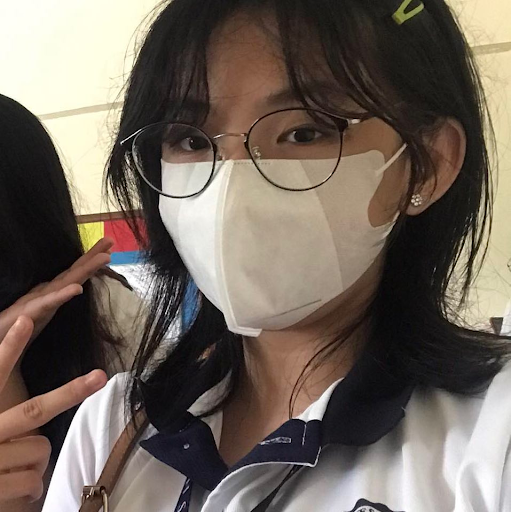

Proposed project.
I. Project Background
Assessing a child's mental health is something we should prioritize. Lack of attention in regards to this can lead to consequences on the child's behavior. The issue is that we lack the funds to pay for every child's psychological assessment as they are expensive. Moreover, damaged mental health doesn't recover automatically--not even fully; They leave scars. Prioritizing a child's mental health can help them gain a new sense that would help them grow healthier because the scars left behind would never be forgotten.
The SMAC institution seeks to provide neglected, abandoned, and orphaned children from the streets a home where they can better their lives through education; restore their human dignity by providing them with a home where they can feel love and care; receive spiritual and values formation to nurture and strengthen their integral human development. However, as stated by one of the administrators of SMAC, one of their concerns is that their children require psychological assessment although they are unable to pay for it due to the high cost. Most of these children had wandered off the streets and experienced very poor living conditions resulting in malnutrition, lacking of hygiene, and low morale; extreme poverty and factors that contribute to the children being exposed to violence and sexual abuse. As a result, they should be provided with psychological assessments not only for one session but until the child fully recovers and will become more mindful of all his/her issues. Though the SMAC institution is only dependent on all their benefactors, sponsors, donors, and donations in cash or in kind, they still have to pay the bills for their utilities and other expenses too. This is why we want to start a project where we can assemble volunteers and possibly some students from Ateneo where we can bring some of our clothes, toys, or other items that are still in good condition and will serve a great purpose and sell them to raise money and be able to give it to the institution so that they could provide their kids psychological assessments.
The project was brought up in order to prioritize the top problem of the SMAC institution, which is the lack of funds for the psychological assessments for each of the children presented in the community. It has been known that the SMAC community has struggled with finance which makes them struggle with affording psychological assessments, it’s also a struggle since it is expensive and even so, they want to be able to help their children to be able to build up a better mentality.
Other problems encountered, are mostly coming from financial things, which could be for affording food, paying the bills, and more. And due to fact, the sisters are also busy and struggling, which gives them more issues in their financial state.
Since the children of the SMAC institution were neglected, abandoned, or orphaned children from the streets they haven’t fully developed knowledge such as taking care of themselves. These children may haven’t been socially adjusted or psychologically developed. That is why the institution is in need of psychological assessments for their children in order for them to fully recover and become more aware of his/her issues. However, since the psychological assessments are too expensive and their budget is only sufficient to meet the children’s physiological needs, they are unable to pay for them and give their children psychological assessments. The institution provides a lot of things for their children, especially their education. Although, since the institution has to provide their children with other things, their budget does not allow the provision of psychological assessments for their children anymore. The institution's vision and mission will benefit greatly from a solution to this issue. In order to produce children who are socially adjusted, psychologically developed, spiritually mature, living and practicing Christian values, sharing their faith with their peers, and experiencing the fullness of life, they need to be able to administer psychological assessments to the kids. By doing this, they are able to carry out their mission, which entails enhancing the children's lives through education, restoring their human dignity by providing them with a home where they can experience love and care, and receiving spiritual and value-based formation to support and strengthen their overall development as people. Not only can solving this problem help in fulfilling the vision and mission of this institution but this helps the children to become the best versions of themselves and will be able to provide a better future for them.
II. The intervention
The project was proposed in order to prioritize the SMAC institution's top problem, which is a lack of funds for psychological assessments for each of the children presented in the community. It is well known that the SMAC community struggles with finances, which makes it difficult to afford psychological assessments. It is also difficult because it is expensive, but they still want to be able to help their children build a better mentality.
Other issues encountered are mostly financial in nature, such as difficulty affording food, paying bills, and so on. And because the sisters are also busy and struggling, their financial situation is exacerbated.
This project will help the SMAC institution with the financial problems, especially for the lack of funds for the psychological assessments. Since our main objective is to gather volunteers and raise funds and to be able to donate this to the SMAC institution.
This project will solve the top problem of SMAC institution and help increase the Ignatian values and skills of Ateneans which in meaning both communities will be able to benefit from this project. The budget is also affordable, which is a total of 1,000 pesos.
In this project, we gather volunteers and ourselves and provide no-use good in condition items that can be used by anyone. And with those items provided, we sell them and donate the funds earned to the SMAC institution.
Proposed project:
Volunteering and raising funds
As said and has been aware of, the problem is that the SMAC institution lacks the money to afford psychological assessments for the children so that they can feel more loved and can help themselves further in the future. The whole idea of the project “Volunteering and raising funds” is where we create an organization or group and assemble volunteers that also come from Ateneo students, where we as a whole, bring our possessions that are still in good condition, which some of the possessions are clothes, toys, or much other stuff that can serve a great purpose in being able to sell them and raise funds so that we will be able to give it away to the institution. The whole point of volunteering and selling these items can help raise money and help the SMAC institution afford psychological assessments for the children.
As we all know, the problem we are focusing on is the lack of funds for the psychological assessment of the kids in SMAC institutions. We want to solve the problem using the project we propose called “Volunteering and raising funds'', which is basically gathering people and students from Ateneo hopefully to sell items that are still in good shape, which in doing this, we are able to collect funds from the items sold and donate it to the institution. This kind of project can help the institution effectively since this solves their problem of lack of funds for psychological assessment for the children. This also enhances community cooperation between the people and especially the students from Ateneo. This kind of project is better than the other alternative since not only we are able to solve the top problem of the SMAC institution, but we are also able to learn many things such as how we can sell our goods and help more people with this kind of method. This also helps students to enhance their Ignatian values and their social skills. This can benefit the SMAC institution, the students, the community, and the school. However, this kind of project can take a while for gathering, and convincing individuals to sell their no-use items will be difficult, it’s not as practical and simple.

This is Alexandra Rianna R. Aguirre.
She belongs in grade 9 class Favre.
Alex likes to read and draw and dislikes anything that's far too complicated than it should be.
She often spends her time reading stories.
When working, she likes to work quietly to avoid distractions.